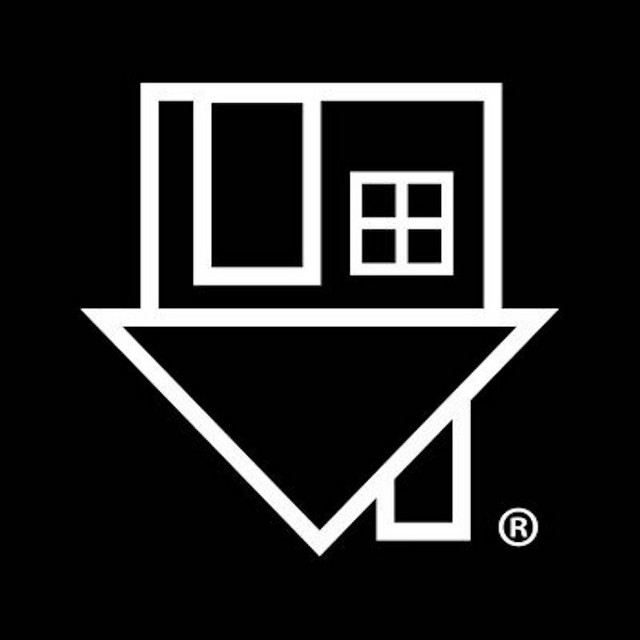

Quem são
I K I L I K I L I K I L I
The Neighbourhood foi uma banda de rock-indie, formada em 2011 por Jesse Rutherford no vocal, Jeremy Freedman na guitarra, Zach Abels na outra guitarra, Mikey Margott no baixo e Bryan Sammis na bateria, sendo substituído três anos depois por Brandon Fried.
Crescendo juntos na área de Newbury Park em Thousand Oaks na Califórnia, o The Neighbourhood começou em 2011 como um grupo de amigos. Seu álbum de estreia de 2013, “I Love You.", e o single “Sweater Weather”, de platina dupla, levaram a banda para o topo das paradas pop e alternativas. “Sweater Weather” emergiu como um dos maiores singles de 2013 e The Neighbourhood passou a esgotar os locais em todos shows nos EUA, Europa e Rússia.
“Wiped Out!”, o segundo álbum do The Neighbourhood, foi uma coleção agitada de rock com infusão de R&B, mais uma vez reescrevendo as regras do que significa ser uma banda de rock na paisagem musical moderna.
Ao longo dos anos, a banda provou ser criadora de tendências por meio de sua produção musical e cultural, levando The 1975, Travis Scott e Kevin Abstract em suas primeiras turnês nacionais.
História
I K I L I K I L I K I L I
Formação e I Love You. (2011-2013)
No início de 2012, The Neighbourhood lançou 'Female Robbery' e 'Sweater Weather'. Em maio de 2012, a banda lançou um EP livre auto-lançado intitulado "I'm Sorry..". O EP de estréia foi produzido por Justyn Pilbrow. Em dezembro de 2012, The Neighbourhood lançou seu segundo EP, intitulado "Thank You,". Eles incluíram as canções 'Let It Go' e 'A Little Death'.
"I Love You. foi lançado em 23 de abril de 2013 e estreou no número 39 na Billboard 200 álbuns. Em 27 de junho de 2013, eles apresentaram o seu primeiro single "Sweater Weather" no Jimmy Kimmel Live. 'Sweater Weather' liderou as paradas no início de Junho de 2013, alcançando o número 1 na parada da Billboard alternative e no top ten no Billboard Heatseekers chart. A Rolling Stone cobriu a estréia mundial de "I Love You." em 16 de abril, que descreve o álbum como "temperamental" e "atmosférico".
O vídeo para o primeiro single oficial do I Love You. "Sweater Weather", foi lançado em 5 de março de 2013. A banda é conhecida por suas imagens em preto e branco, como visto em toda a sua música, trabalhos de arte, e vídeos.
"The Love Collection" inclui as três músicas "West Coast', 'No Grey' e '$TING'. Eles estavam cada lançado em 7" Vinyls.
The Neighbouhood no Jimmy Kimmel Live
Mixtape e Wiped Out! (2014–presente)
Em 16 de janeiro de 2014, a banda revelou através da mídia social que o baterista Bryan Sammis estava deixando a banda.
O álbum de mixtape intitulado "#000000 & #FFFFFF" foi lançado no dia 28 de Novembro de 2014, depois de ter sido adiada por um dia devido à edição final levando mais tempo do que o esperado. "#000000 & #FFFFFF" é apresentado pelo DJ Drama, caracterizando uma mistura de hip-hop e rock, e participações de YG, Dej Loaf, French Montana, Danny Brown, G-Eazy e outros.
Em agosto de 2015, a banda anunciou o próximo 30 de outubro lançamento de seu segundo álbum "Wiped Out!", com o single R.I.P 2 My Youth. A banda mais tarde lançou os singles "The Beach" e "Prey" antes de liberar o álbum full-length 31 de outubro de 2015. O álbum inclui 10 faixas: 'Prey', 'Cry Baby', 'Wiped Out!', 'The Beach', 'Daddy Issues', 'Baby Came Home 2/Valentines', 'Greetings from Califournia', 'Ferrari', 'Single' e 'R.I.P 2 My Youth'.
Turnês e Performances
Levando até o lançamento de seu álbum de estréia, "I Love You.", The Neighbourhood realizou uma performance no Coachella de 2013.
The Neighbouhood em Coachella de 2013
Performaram sua canção 'Afraid' em um show ao vivo patrocinado pelo Nation SXSW em março de 2013.
Em 23 de abril, The Neighbourhood anunciou sua turnê de verão 2013 chamado The Love Collection Tour junto com Lovelife, The 1975, e JMSN.
Eles fizeram um show como parte do KROQ Weenie Roast em 18 de maio de 2013.
Em 30 de maio de 2013, eles anunciaram que estariam saindo em turnê com Imagine Dragons em julho e setembro de 2013.
Eles fizeram duas aparições no leste do Canadá durante o verão de 2013. Eles tocaram como um dos headliners do Edgefest de Toronto em 31 de Julho de 2013 e, em seguida, alguns dias mais tarde tocou no maior festival de música do Canadá, Osheaga, em Montreal, em 04 de agosto.
The Neighbourhood tocou em Atlanta no Music Midtown em 21 de setembro de 2013. Em 27 de junho, 2013, eles realizaram o seu primeiro single "Sweather Weather", em preto e branco, no Jimmy Kimmel Live. Em um comunicado à imprensa datado de 15 de novembro de 2013, foi anunciado que eles tocariam em "webcast série de concertos da CBS Interactive premiado, Live on Letterman, apresentado pela AT&T", a ser apresentado em preto e branco em 19 de novembro de 2013. Em 8 de dezembro de 2013 eles abriram em um evento chamado "Not So Silent Night" para Bastille, Arcade Fire, Alt-J, Phoenix e Lorde. Em seguida, apenas dois dias depois, em 10 de Dezembro, uma nova faixa chamada Silver estreou na BBC Radio 1. Eles também anunciaram um novo projeto, #000000 & #FFFFFF com uma data de lançamento em algum momento durante 2014. Em janeiro, a banda anunciou uma turnê que seria executada através de março de 2014, chamado Le Tour Noir. Além disso, em janeiro, The Neighbourhood tocou na CBS de "Grammy Gig of a Lifetime" que teve lugar no Club Nokia em Los Angeles. O cantor country Barrett Baber abriu para eles.
The Neighbouhood em BBC Radio 1
Por meio de um retweet do vocalista Jesse Rutherford, confirmou-se que a banda tocaria em um show SXSW em 12 de Março de 2014, o Palm Door on Sixth, em Austin, TX. O show ocorreu em apoio ao Woman's Hour, RÁJ, e mais com the neighbourhood anunciado como a atração principal.
Durante todo o final de abril e maio de 2014, a banda fez uma turnê pela Europa. Eles tocaram em vários lugares, incluindo Paris, Lisboa, Liverpool, Londres, Brighton, Amsterdã, Moscou, Varsóvia e terminou a turnê em 17 de maio, em Cracóvia no Czyżynalia em 2014.
Em 22 de junho, 2015, foi anunciado que The Neighbourhood embarcaria em uma turnê no outono de 2015, intitulada "The Flood Tour". As bandas Hunny e Bad Suns também participaram da turnê.
Marca
Os membros da banda escolheram a ortografia britânica da "neighbourhood", 'a vizinhança' no português, a conselho de seu empresário, a fim de distinguir-se de uma banda que já utilizava a ortografia americana.
A logo, casa virada, é assim porque seria muito simples ''normal''. Já o preto e branco, surgiu desde o inicio da banda, desde os clipes, feed no Instagram era preto e branco. O feed mudou em 2016/17 e os clipes apenas em 2018. Segundo entrevistas era assim, pois, colorido não combinaria com conceito, letras, vídeos e personalidade da banda.